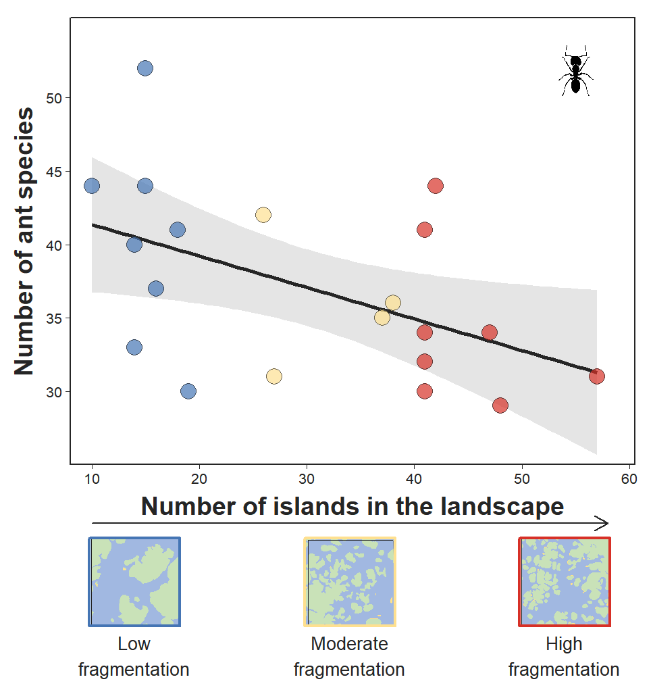

library(dplyr)
library(car)
library(ggplot2)
library(tidyverse)
library(ggtext)
library(ggimage)
library(lmtest)
library(grid)
library(png)
library(MuMIn)
# Importing data
rm(list = ls()); gc()
set.seed(13)
comm <- read.csv("ants_comm.csv", header = T)
env <- read.csv("sampled_lands.csv", header = T)
complete <- merge(comm, env, by = "point_ID")
complete <- complete[,c(1,147:154,2:145)]3 Gamma diversity
To investigate the effect of forest fragmentation on the total number of leaf-litter ant species across the 10 points in each landscape, we performed simple linear regression analysis.
3.1 Loading packages and importing data
3.2 Calculating the number of species in the landscapes (gamma diversity)
complete$landscape <- as.factor(complete$landscape)
comm_landscape <- complete[,-c(1,5)] %>%
group_by(landscape) %>%
summarise(
across(c(number_patches, forest_cover, long, lat), first),
across(c(patch_area), mean), #mean patch size by landscape
across(
where(is.numeric) &
!all_of(c("number_patches", "forest_cover", "long", "lat", "patch_area")),
sum
),
.groups = "drop"
)
comm_landscape[,c(7:150)] <-
comm_landscape[,c(7:150)] %>%
mutate(across(where(is.numeric), ~ ifelse(. > 0, 1, 0)))any(comm_landscape[, 7:150] > 1) #checking if any value is higher than 1 (presence)[1] FALSEcomm_landscape$richness <- rowSums(comm_landscape[,7:150]) # richness by landscape
landscapes <- comm_landscape[,c(1:3,6,151)]
colnames(landscapes)[4] <- "mean_patch_area"
landscapes$type <- NA
landscapes$type[1:8] <- "FL"
landscapes$type[9:12] <- "MS"
landscapes$type[13:20] <- "SS"
landscapes$type <- as.factor(landscapes$type)3.3 Testing the correlation between habitat amount and number of patches in the landscapes
One specific condition mentioned by Fahrig et al. (2022) is that the total amount of habitat should either be the same across the sampled landscapes, or at least not be correlated with the number of patches. We tested the correlation between forest cover (habitat amount) and number of patches and found no significant correlation:
# Testing the correlation between forest cover and number of patches
# of the sampled landscapes
cor.test(comm_landscape$number_patches, comm_landscape$forest_cover)
Pearson's product-moment correlation
data: comm_landscape$number_patches and comm_landscape$forest_cover
t = -0.95386, df = 18, p-value = 0.3528
alternative hypothesis: true correlation is not equal to 0
95 percent confidence interval:
-0.6033103 0.2471607
sample estimates:
cor
-0.2193513 # cor = -0.22, not correlated3.4 Fitting the models
# Is species richness influenced by the number of patches in the landscape (Richness vs Number of patches)?
mod1 <- lm(richness~number_patches, data = landscapes)
summary(mod1) # r2-adj= 0.20, slope = -0.21, p = 0.03
Call:
lm(formula = richness ~ number_patches, data = landscapes)
Residuals:
Min 1Q Median 3Q Max
-9.4355 -3.3626 -0.3949 2.9015 11.7062
Coefficients:
Estimate Std. Error t value Pr(>|t|)
(Intercept) 43.5126 2.9619 14.691 1.83e-11 ***
number_patches -0.2146 0.0886 -2.422 0.0262 *
---
Signif. codes: 0 '***' 0.001 '**' 0.01 '*' 0.05 '.' 0.1 ' ' 1
Residual standard error: 5.553 on 18 degrees of freedom
Multiple R-squared: 0.2458, Adjusted R-squared: 0.2039
F-statistic: 5.866 on 1 and 18 DF, p-value: 0.02622# Generalized linear regression with poisson (count) distribution
mod2 <- glm(richness~number_patches, data = landscapes, family = "poisson")
summary(mod2) # slope = -0.01, p = 0.03
Call:
glm(formula = richness ~ number_patches, family = "poisson",
data = landscapes)
Coefficients:
Estimate Std. Error z value Pr(>|z|)
(Intercept) 3.784579 0.085416 44.308 <2e-16 ***
number_patches -0.005832 0.002639 -2.209 0.0271 *
---
Signif. codes: 0 '***' 0.001 '**' 0.01 '*' 0.05 '.' 0.1 ' ' 1
(Dispersion parameter for poisson family taken to be 1)
Null deviance: 19.416 on 19 degrees of freedom
Residual deviance: 14.510 on 18 degrees of freedom
AIC: 127.32
Number of Fisher Scoring iterations: 4AIC(mod1, mod2) # both models are equally plausible. I will keep mod1. df AIC
mod1 3 129.2261
mod2 2 127.3200shapiro.test(mod1$residuals) # normal residuals (p=0.90)
Shapiro-Wilk normality test
data: mod1$residuals
W = 0.97743, p-value = 0.8967bptest(mod1) # homoscedasticity (p=0.255)
studentized Breusch-Pagan test
data: mod1
BP = 1.2959, df = 1, p-value = 0.2553.5 Plotting the graph
# Plotting the graph
landscapes$cor <- NA
landscapes$cor[1:8] <- "#4575b4"
landscapes$cor[9:12] <- "#fee090"
landscapes$cor[13:20] <- "#d73027"
plot2 <-
ggplot(data = landscapes,
mapping = aes(x = number_patches, y = richness)) +
geom_smooth(method = "lm", fill = "#cccccc", alpha = 0.5,
color = "#252525") +
labs(x = "Number of islands in the landscape",
y = "Number of ant species") +
geom_image(
data = tibble(number_patches = 55, richness = 51.9),
aes(image = "ant_1.png"), size = 0.08
) + # https://www.phylopic.org/images/3ae7cb42-8904-4775-87d6-968255913711/camponotus-vagus
geom_point(size = 4, shape = 21,
color = "#252525", fill = landscapes$cor,
alpha = 0.7) +
theme_bw(base_size = 10) +
theme(panel.grid = element_blank(),
panel.border = element_rect(colour = "#252525"),
axis.title = element_text(colour = "#252525", face = "bold", size = 14),
axis.title.x = element_text(vjust = 0, size = 14),
axis.title.y = element_text(vjust = 2, size = 14),
axis.text = element_text(colour = "#252525"),
axis.ticks = element_line(colour = "#252525", size = 0.25),
plot.margin = margin(t=10, r=10, b=100, l=10)) +
coord_cartesian(clip = "off")
img10 <- rasterGrob(readPNG("graphical_abstract2.png"), interpolate = TRUE)
img30 <- rasterGrob(readPNG("landscapes_x-axis_3.png"), interpolate = TRUE)
img50 <- rasterGrob(readPNG("graphical_abstract2_3.png"), interpolate = TRUE)
rect1 <- rectGrob(gp = gpar(col = "#4575b4", fill = NA, lwd = 2))
rect2 <- rectGrob(gp = gpar(col = "#fee090", fill = NA, lwd = 2))
rect3 <- rectGrob(gp = gpar(col = "#d73027", fill = NA, lwd = 2))
plot3 <-
plot2 +
scale_x_continuous(limits = c(8, 58),
breaks = c(10, 20, 30, 40, 50, 60),
expand = expansion(mult = c(0, 0.05))) +
scale_y_continuous(limits = c(25, 54),
breaks = c(30, 35, 40, 45, 50),
expand = expansion(mult = c(0, 0.05))) +
coord_cartesian(clip = "off") +
annotation_custom(img10, xmin = 9, xmax = 19, ymin = 14, ymax = 20) +
annotation_custom(img30, xmin = 29, xmax = 39, ymin = 14, ymax = 20) +
annotation_custom(img50, xmin = 49, xmax = 59, ymin = 14, ymax = 20) +
annotation_custom(rect1, xmin = 9.8, xmax = 18.2, ymin = 14, ymax = 20) +
annotation_custom(rect2, xmin = 29.8, xmax = 38.2, ymin = 14, ymax = 20) +
annotation_custom(rect3, xmin = 49.8, xmax = 58.2, ymin = 14, ymax = 20) +
annotation_custom(grid::linesGrob(arrow = arrow(length = unit(0.3, "cm")),
gp = gpar(col = "#252525")),
xmin = 10, xmax = 58, ymin = 21, ymax = 21) +
annotation_custom(grid::textGrob(label = "Low\nfragmentation", x = unit(14, "native"),
y = unit(13, "native"),
gp = gpar(fontsize = 10, col = "#252525")),
xmin = 14, xmax = 14, ymin = 12, ymax = 12) +
annotation_custom(grid::textGrob(label = "Moderate\nfragmentation", x = unit(34, "native"),
y = unit(13, "native"),
gp = gpar(fontsize = 10, col = "#252525")),
xmin = 34, xmax = 34, ymin = 12, ymax = 12) +
annotation_custom(grid::textGrob(label = "High\nfragmentation", x = unit(54, "native"),
y = unit(13, "native"),
gp = gpar(fontsize = 10, col = "#252525")),
xmin = 54, xmax = 54, ymin = 12, ymax = 12)plot3`geom_smooth()` using formula = 'y ~ x'
ggsave(
plot = plot3,
filename = "Richness_NumberPatches_v10.png", dpi = 500,
width = 8 * 1.6, height = 8 * 1.7, units = 'cm') `geom_smooth()` using formula = 'y ~ x'3.6 Identifying the best model
To check which variable best explains the number of species in the landscapes, we used model selection analysis to identify the best-performing model. The best model included only number of patches.
mod_global <- lm(richness ~ number_patches + forest_cover, data = landscapes, na.action = na.fail)
models <- dredge(mod_global)Fixed term is "(Intercept)"modelsGlobal model call: lm(formula = richness ~ number_patches + forest_cover, data = landscapes,
na.action = na.fail)
---
Model selection table
(Int) frs_cvr nmb_ptc df logLik AICc delta weight
3 43.51 -0.2146 3 -61.613 130.7 0.00 0.655
1 37.00 2 -64.434 133.6 2.85 0.158
4 41.98 0.0379 -0.2101 4 -61.585 133.8 3.11 0.138
2 32.43 0.1243 3 -64.196 135.9 5.17 0.049
Models ranked by AICc(x)